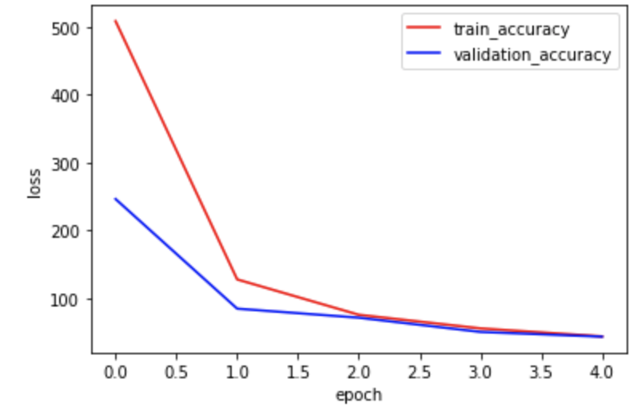

Dataloader
For this part, we are going to use a much larger dataset from 300W_large_face_landmark_dataset. It contains 6666 images with some people in it, but the faces may take a small portion of the image. Therefore, I start by cropping the image so that we mainly have one face on a 224*224 image. Then I do augmentation with shift (offset<=10) and rotation (degree<=15) again.
CNN Model
For this part, we are going to use a predefined model called RESNET18. The structure of the model is shown below. The only two modifications are:
1. Changing the input size to 1*224*224 so it can take grey images.
2. Changing the output size to 138, which represent coordinates of 68 key points.
Becuase it takes a long time to iterate through all of the 6666 images for every epoch, this time we only train the model for 5 epoches. Below are the training and validation losses across those iterations.
We can see the loss decreases dramatically after the first epoch and then keeps decreasing gradually for follow epoches. The MSE for the whole training dataset is 43.4 after the last epoch.
Results
Now we can see how the model performs on the training dataset as well as some new image inputs.
Following are 3 examples from training dataset.
Overall the model can predict the key points and the shape of the face, although it's not so accurate due to the limited training epoches.
Then we can test the model on some new image inputs, which are actually the images that I used for last project about face morphing.

Wow! For last project, I had to manually annotate key points on faces, but now I can use the NN model to do the auto prediction, and actually it performs quite well! When the image is on the sideview of the face, the prediction is not as well as the front-view ones, but the errors look reasonable.